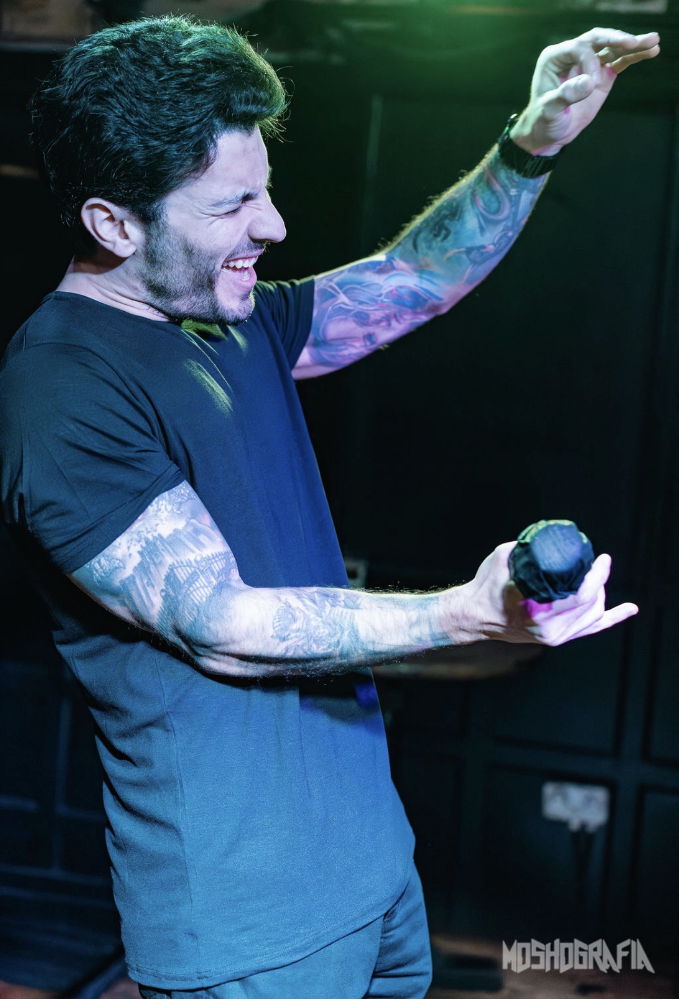
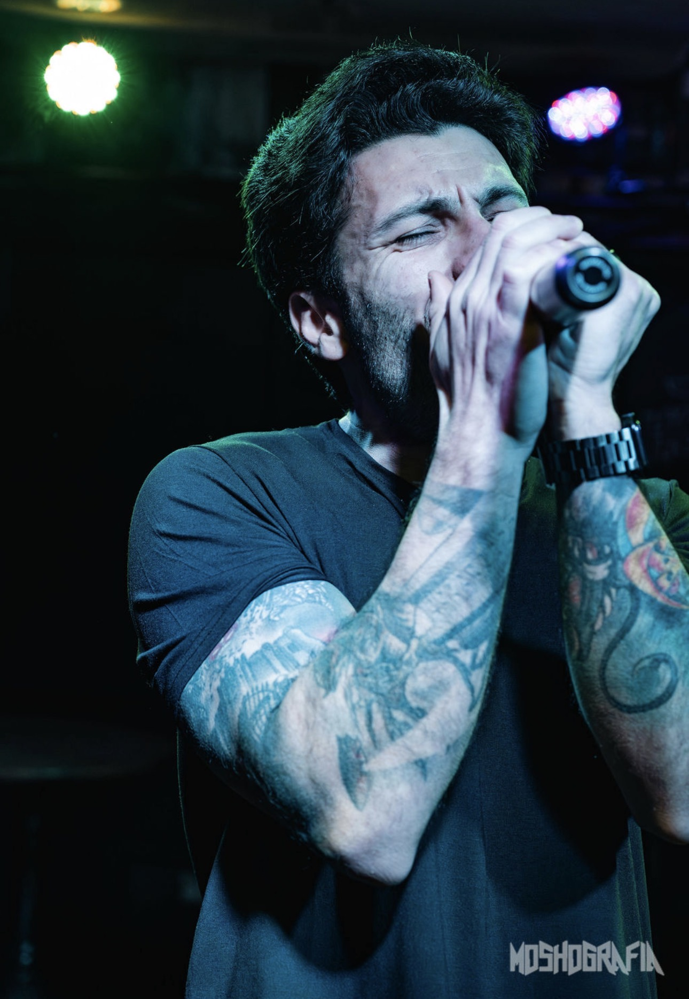
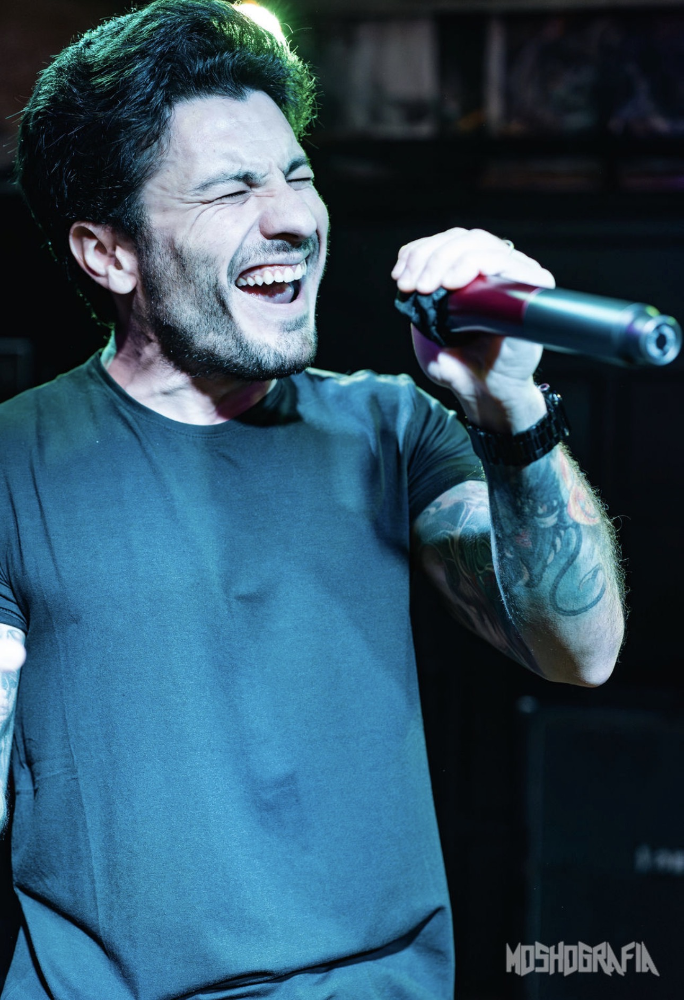
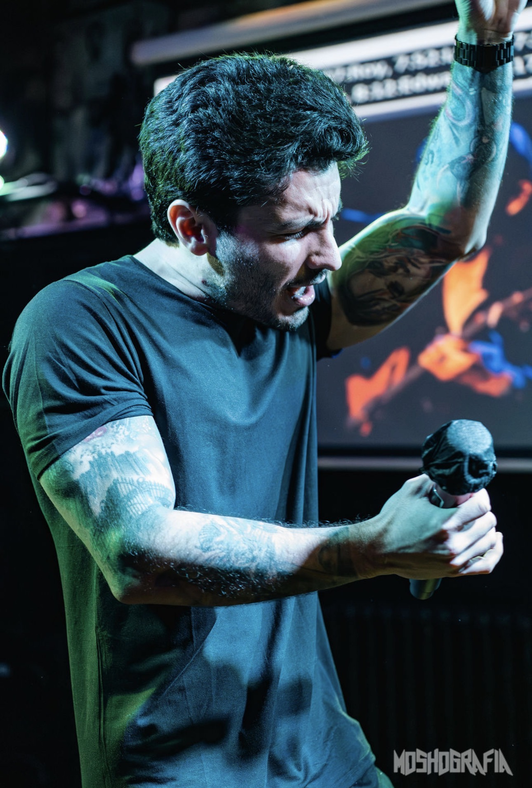
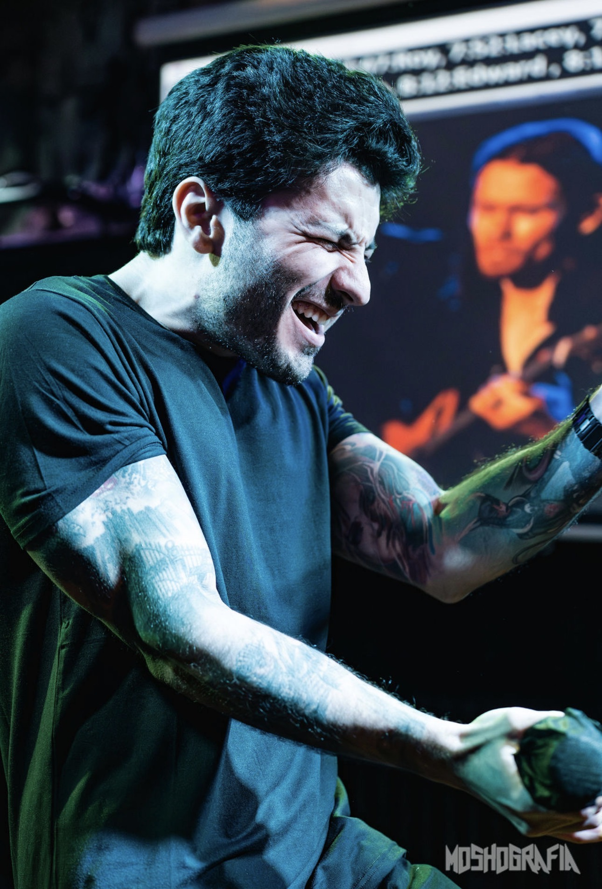

vocals
Pervencer · Razek · Dienasty · Inchess



fotos: @moshografia
Cronologia
início
Razek
Banda de metal. Sorocaba, SP.
Metalanos seguintes
Pervencer
Technical death metal. Álbum Apocalyptic Suffering (2019). Sorocaba, SP.
Technical Death Metalanos seguintes
Inchess
Humanist Killer — SoundCloud e YouTube.
Metalpresente
Dienasty
Banda atual. Em gravação.
Em gravaçãoBanda Atual
Banda atual. Material em gravação.


Pervencer
Technical death metal. Sorocaba, SP. Vocal: Luiz Fernando Toledo.
Razek
Inchess